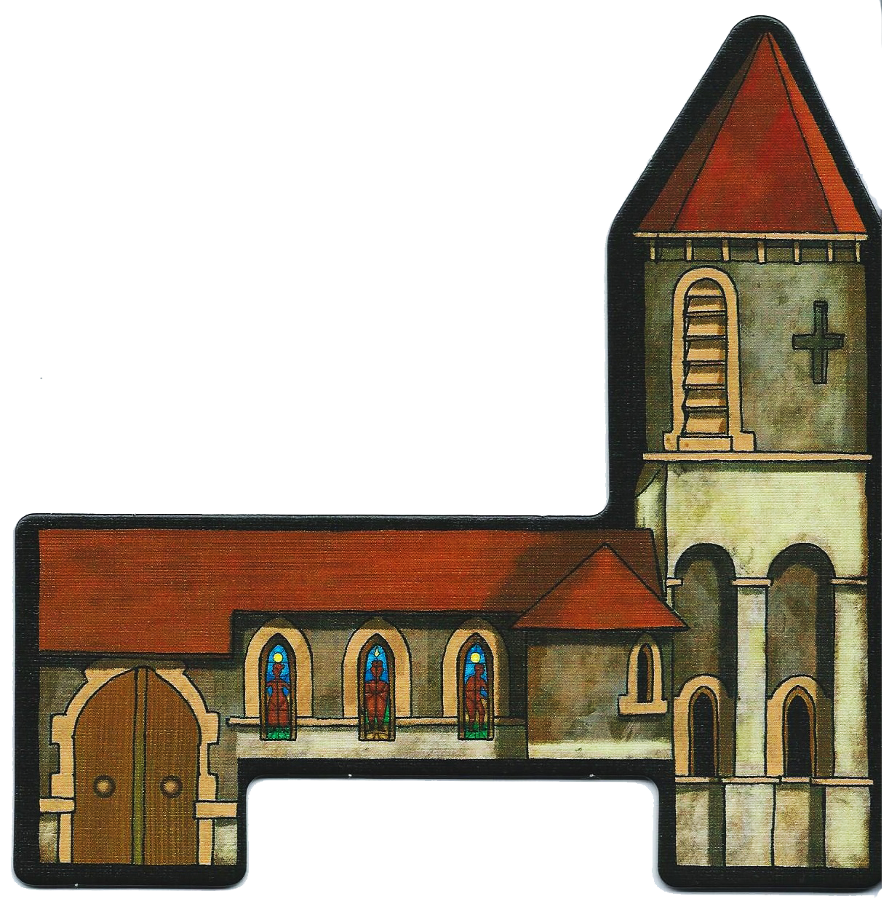

The Church: occupied by the Confessor

(Unique Power)
- At any point during the day, even after the choice of the eliminated player via vote, the Confessor chooses a player who will have the immediate obligation to secretly show him his character card.